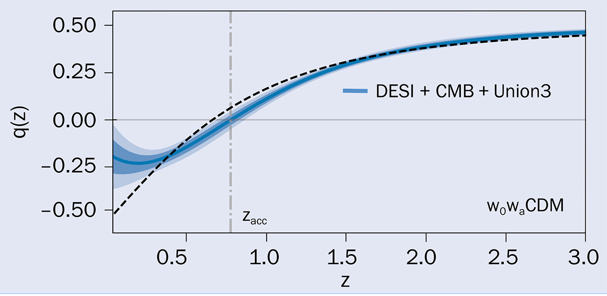
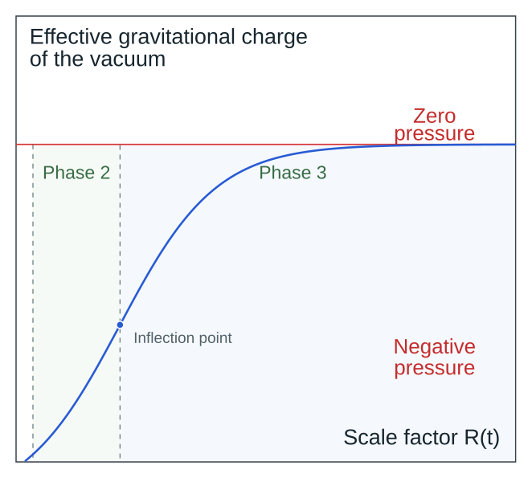

Preliminary remark
The author received his doctorate in physics in 1974 under Prof. A. Seeger at the University of Stuttgart, working on the interaction between dislocations and magnetic flux lines in type-II superconductors. He is now a retired physicist who worked for more than 34 years in industry, analyzing complex types of production failures and promoting new concepts as head of development for space communication and radar TWTs and as head of business development. In this role, he and his team invented and developed an innovative magnetic cusp-field ion propulsion thruster, called HEMPT, which has since been space-qualified with DLR on the German H2 satellite. He is not an expert in the fields of astronomy, cosmology, general relativity, particle physics, quantum field theory or mathematics addressed here, but is highly interested in their widely reported results.
As an outsider in these areas, he has to be speculative, but he tries to arrange the innumerable, often contradictory results into a consistent global picture, with the intention of encouraging new ideas and cross-disciplinary thinking for a next generation of experts. Therefore, this is not a typical scientific paper meeting all accepted standards, for example those of source citation. In times of artificial intelligence, these sources can easily be found by interested readers. Instead, he tries to interest open-minded expert scientists in developing some of the new, basic ideas presented here into a future physically consistent theory of quantum gravity.
Introduction
The thoughts presented here were originally inspired by D. S. Hajdukovic’s hypotheses about the gravitational polarization of the quantum vacuum. These explain the excessively fast rotation of outer stars in galaxies and of galaxies in galaxy clusters without dark matter, and the accelerated expansion of the universe without dark energy, as the local and global effects, respectively, of a gravitationally polarized quantum vacuum.
Hajdukovic’s hypotheses thus dispense with the hypothetical physical entities of dark matter and dark energy used in the currently most widely accepted ΛCDM cosmology.
Though the ΛCDM model is quite successful in explaining many observable parameters of the universe, especially the characteristics of the cosmic microwave background (CMB) radiation, it still completely lacks experimental verification of dark matter particles and an explanation of the physical nature of dark energy, represented by the cosmological constant Λ.
In the author’s opinion, the independent parameter Λ in Einstein’s general relativity theory (GRT) is incorrectly used to remedy and compensate for the so-called vacuum catastrophe of the Standard Model (SM) of particles and quantum fields, which predicts an energy density of quantum vacuum fluctuations up to a factor of 10¹²¹ too high to agree with the observed, still moderate expansion of the universe.
In the author’s opinion, this severe problem is probably solvable only within the SM, where it should be solved, if the quantum vacuum fluctuations of particles and antiparticles are assumed to be gravitational dipoles with zero total mass, as proposed by Hajdukovic.
But how can one seriously justify this assumption, given that Hajdukovic’s ideas lost credibility with the 2023 publication of the ALPHA experiment results at CERN? These found that antihydrogen atoms fall down, like regular matter particles, in the gravitational field of the Earth, and thus show that real antimatter hydrogen atoms definitely have positive mass.
Non-universal quantum fluctuations
To maintain that assumption, we have to pay a price and, the author admits, a very severe, fundamental price. This was not yet considered within Hajdukovic’s theory (D. S. Hajdukovic, 2024; arXiv:2311.02128), but was already mentioned by the author at the 25th BHWS workshop in 2021:
We have to give up the idea of universal virtual quantum fluctuations that are independent of their local environment and assume instead that their gravitational properties depend on interactions with other local particle fields, especially the density of Higgs particle fluctuations.
In simple words, the author considers different quantum fluctuations in a vacuum and within the volumes of real matter particles. To the author, this is quite a logical thought: why should such different media as vacuum and matter not influence their virtual quantum fluctuations? Only for mathematical simplicity?
In vacuum: Virtual particle/antiparticle pairs are gravitational dipoles with opposite polarity and zero total mass, but with a residual gravitational dipole moment. During their existence, the orientations of these virtual dipoles depend on the residual strength of the gravitational field of all other masses at their position and locally strengthen these gravitational fields. Thus, they globally provide a small positive energy density to the quantum vacuum, in agreement with the observed expansion parameter of the universe.
In matter: Virtual particle/antiparticle pairs are gravitationally polar, with two positive particle masses, thus explaining the masses of protons, neutrons and other baryons and mesons through the masses of their valence quarks and sea-quark pairs and the binding energy of gluons, in accordance with the SM.
The reason for this difference is thought to be the universal scalar Higgs field in our present universe, which allows only positive mass in the interaction volume of real particles or real antiparticles. The high local density of virtual Higgs particles or the specifics of quantum gluon field interactions in the local vicinity of real particles or antiparticles provides or imposes only positive inertial and gravitational mass on all virtual particle pairs in this local vicinity.
What do we gain with such a “wild hypothesis”?
- We avoid the vacuum catastrophe while maintaining the positive mass and energy of all real particles/antiparticles, as required by Einstein’s equivalence principle.
- In contrast to matter, the quantum vacuum is in its lowest possible energy ground state. Without matter immersed in it, the quantum vacuum would be gravitationally neutral, but it is polarized by the existence of immersed matter. It thus counteracts gravitation globally, especially in the empty spaces (voids) of the universe, as an expanding antigravity source, whereas in the filaments and walls of galaxies and galaxy clusters it locally increases gravitational strength and binding between and within galaxies and galaxy clusters.
- There is no need for an extremely finely tuned cosmological constant Λ and the related dark energy. In Einstein’s field equations, Λ should be replaced by the time- and space-dependent gravitational polarization energy density of the quantum vacuum, depending self-consistently on the immersed, time- and space-varying matter distribution.
- There is no need for dark matter particles and dark matter halos around galaxies and galaxy clusters. These are again self-consistently replaced by the local strengthening of gravitational fields due to the gravitational polarization densities of the quantum vacuum around and within galaxies and galaxy clusters.
New supporting astronomical observations
Hajdukovic has shown that his physical ideas lead to a mathematical similarity with MOND theory, which directly explains many astronomical observations, especially the baryonic Tully–Fisher relation. His prediction of a reduction in the accelerated expansion of the universe has meanwhile received support from the most recent 2025 results of the DESI team (Dark Energy Spectroscopic Instrument) in Arizona, already at 4.3σ:


Figure 1 shows the DESI results according to CERN Courier, March/April 2025.
Using baryonic acoustic oscillations (BAO) as a ruler, DESI measures a change from decelerated to accelerated expansion of the universe about 7 billion years ago, and a reduction in accelerated expansion since about 3 billion years ago. This agrees with phases 2 and 3 of the five-phase scenario proposed by Hajdukovic, shown in Figure 2 and in the phase list below (the approximate DESI numbers are shown in brackets).
Hajdukovic proposed that dark energy, related to the effective gravitational charge of the quantum vacuum, will disappear in the future of the universe, as shown in Figure 2.


- Decelerated expansion after the release of CMB radiation.
- Start of accelerated expansion (DESI: about 7 billion years ago).
- Reduced accelerated expansion (DESI: starting about 3 billion years ago).
- Finally, vanishing expansion (future?).
- Gravitational recollapse of the universe and the start of an antigravity cycle of a next universe after a bounce of this universe (future?).
It is intriguing that his predictions for the evolution of the universe’s expansion now seem to be confirmed for phases 2 and 3.
However, it remains unclear to the author from Hajdukovic’s publications why step 5, the recollapse, should occur and not stop when recontraction increases the negative pressure again and reaches an equilibrium between antigravity pressure and gravity. The author attributes this problem to Hajdukovic’s use of the argument of homogeneity and isotropy of the universe on large scales.
In contrast, the author is convinced that universal recollapse is inevitably produced by the sponge-like inhomogeneity of the universe. Even today, one finds a steady flow of galaxies and their clusters towards supercluster centers, such as the so-called Great Attractor.
It must be emphasized that these DESI results contradict the assumption of a cosmological constant Λ, which requires a continued future increase in the accelerated expansion of the universe. More light will soon be shed on this phenomenon by the expected results from the European Euclid satellite.
But let us now consider the important role of black holes in the evolution of the universe.
The role of black holes (BHs)
What can be considered established knowledge about BHs?
- They really exist and are a prediction of Einstein’s GRT, as shown by the 2020 Nobel Prize winners R. Genzel, A. Ghez and R. Penrose.
- In addition, they are verified by the gravitational waves produced by BH mergers, first detected in 2015 by the LIGO detector.
- They are characterized by only three parameters: mass M, angular momentum L and charge C.
- This was highlighted by J. Wheeler in 1971 in the famous “no-hair theorem”, which states that BHs possess no other attributes.
- But the charge C of a BH has never been measured or detected; it is only a possible solution of GRT (the Reissner–Nordström solution) and probably does not really exist.
There is still a major scientific dispute about the so-called information paradox: if S. Hawking and R. Penrose were right, information about objects falling into a BH would ultimately be lost when the BH thermally evaporates through random photonic Hawking radiation. This contradicts the unitarity principle of quantum theory.
As a consequence, this led to the strange idea of potential holographic storage of information at the event horizon of the BH. Even if mathematical procedures allowed such a process, the author considers it completely unrealistic.
He argues that science should be guided by its own real observations, namely gravitational waves. If BHs merge, their only information, masses M₁ and M₂ and angular momenta L₁ and L₂, is fully contained in the radiated gravitational-wave spectrum, including the amount of gravitational-wave energy emitted for this information. For the first LIGO event, GW150914, these values were M₁ = 36 M☉ merging with M₂ = 29 M☉, resulting in a new BH with M₃ = 62 M☉, plus 3 M☉ radiated as informational gravitational-wave energy (1 M☉ = 1 solar mass).
Can the scientific community not simply assume that the same mechanism occurs when any arbitrary incoming object increases the mass and changes the angular momentum of a BH? That would mean that the same information about the incoming object should be emitted as gravitons (a gravitational-wave spectrum), and all additional information might be reflected in some quantum-mechanical processes when the object disappears at the event horizon and stops emitting gravitational waves.
Then there is the question of why the entropy of a BH is equal to the surface area of its event horizon in Planck units. The author’s unscientific answer: because all information about the incoming object is emitted into outer spacetime as gravitons in front of this surface. The infalling object increases the BH mass and the BH event-horizon area only slightly, leaving the object’s information-specific wave pattern in outside spacetime.
The author’s conclusion
There is no specific information inside BHs about objects that have fallen into them, nor is specific information stored at the event horizon of a BH, except for their contributions to the BH’s mass and angular momentum. All other information is maintained outside in the gravitational-wave pattern of spacetime. This means that the quantum-mechanical unitarity principle, that no information can be lost in the universe, remains correct.
What would that mean?
In the author’s opinion, S. Hawking and R. Penrose were not correct in assuming that a BH Hawking temperature TH = ℏc³/(8πGMkB) > 0 would lead to photonic Hawking radiation and, ultimately, to evaporation of BHs through loss of energy and thus mass. Even if evaporation by Hawking radiation occurred, the author assumes that the growth of BHs would be much faster than their evaporation, as can be observed in today’s universe.
Instead, there might exist inside a BH a stable bosonic quantum state of matter in the form of Bose–Einstein condensates (BECs). Though we cannot really measure anything about the interior of BHs, we can speculate and try to draw conclusions by extrapolating their external behavior.
Since about 2011, several ideas have been proposed for the formation of BECs inside BHs, for example the formation of a graviton BEC by Dvali & Gómez.
The author considers it very likely that Higgs bosons themselves also form such a BEC, because they are heavy elementary particles without spin that could form a BEC at almost zero temperature, ideally fulfilling the BH “no-hair theorem” with maximum mass/energy density and an overall BEC angular momentum formed by vortices, as required for BHs. This would mean that each entry of an object at the event horizon of a black hole should be considered a quantum-mechanical collision process with the BH Higgs and graviton BECs as collision partners.
BH entropy and the fate of the universe
Assuming that the Bekenstein–Hawking formula for BH entropy SBH is valid:
Each merger of black holes dramatically increases the overall entropy due to its quadratic dependence on M. As a result, the final state of the universe, predicted by the second law of thermodynamics that entropy can only increase, should be one single black hole.
This would be the topology of the universe in which a quantum step, a sign change of the universal scalar quantum Higgs field, could occur. Within a finite spherical volume, it would release the extremely dense, cold, mass-bound energy of the Higgs particle BEC into an extremely dense and hot new cycle of a gravitationally negative anti-universe. It would start with opposite gravity and extremely low entropy again, but would be extremely uniform and homogeneous due to the uniform BEC quantum state of the preceding final BH. This would explain the uniformity of the cosmic microwave background (CMB), without the need for an earlier inflationary process.
A question remains: what happens to the information stored in the gravitational spacetime ripples of the old universe? Does it pass through this gravitational eversion/transition, or is it now completely erased?
It is probably erased, because in a contracting universe all photonic and gravitational energy will also end up in the final BHs.
Assuming universes that cycle infinitely in time, with epochs of alternating gravitational polarity and sign changes of the scalar Higgs field but constant absolute values of mass/energy, it is assumed that physics might remain the same, whereas individual particle history might be lost and remain open in the new cycles of universes due to their quantum-field nature. Note: in special relativity theory (SRT), E² = m²c⁴ + p²c², so rest mass and energy occur only in quadratic terms. For momentum p = 0, assumed for a final BH, therefore, E = ±mc²; both solutions are possible for the total rest mass m, and thus a negative value of the Higgs quantum field, with a transition through zero, should also be possible.
A nice picture with which to imagine this gravitational inversion/eversion at the end/beginning of each cycle, switching maximum entropy into minimum entropy again, is shown in Figure 3 in the appendix. A balloon contracts its surface and turns its inside surface out through its blowing hole to become the new outside surface of the balloon, which is blown up again. In the physical world, when the Higgs field switches through zero, the universe expands through an enormous release of free energy at the lowest entropy, in a new cycle of increasing volume and structure formation.
These considerations require no inflation to explain the uniformity of the cosmic microwave background (CMB), and can explain why we are living in a universe with only a very small amount of antimatter: the previous universe was an antimatter universe with almost no matter.
Acknowledgments
- I thank my colleague and friend Dr. Gottfried Kögel for his precise elaborations and the time he spent trying to convince me that my ideas and those of Hajdukovic are wrong. This kept me on track to state here that they might be at least partly right.
- I am very grateful to Dr.-Ing. Tarek Nasr (t.nasr@vnplan.de), whom I met at the Einstein Center in Ulm, for the fantastic balloon-inversion picture as an analogy for the gravitational inversions of the final BHs.
- I want to honor Prof. Kurt Roessler for his personal and friendly organization of the very interesting annual Bad Honnef Winter Seminars (BHWS), which ended last year due to his age. They repeatedly stimulated my interest in questions about the evolution of the universe and life on Earth.
- I would also like to thank all my friends who reminded me that I should try to formulate my ideas, rather than only speak about them.
- Finally, thanks to my wife Ursula for her patient reminders that I am sitting too long in front of the computer. I probably followed her proposed alternatives too seldom.
Appendix